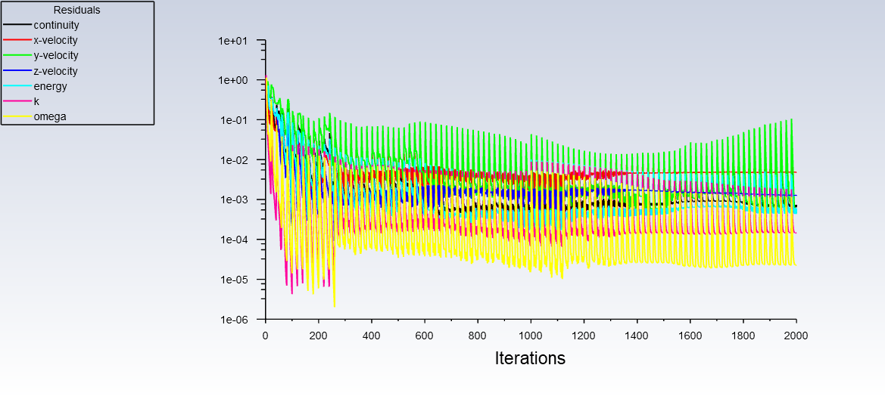
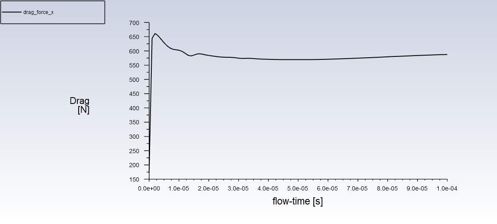
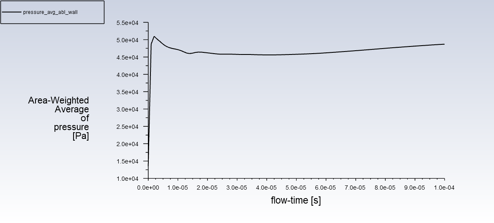
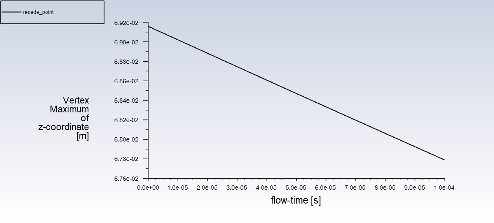

Note
Go to the end to download the full example code
Modeling Ablation#
Objective#
Ablation is an effective treatment used to protect an atmospheric reentry vehicle from the damaging effects of external high temperatures caused by shock wave and viscous heating. The ablative material is chipped away due to surface reactions that remove a significant amount of heat and keep the vehicle surface temperature below the melting point. In this tutorial, Fluent ablation model is demonstrated for a reendtry vehicle geometry simplified as a 3D wedge.
This tutorial demonstrates how to do the following:
Define boundary conditions for a high-speed flow.
Set up the ablation model to model effects of a moving boundary due to ablation.
Initiate and solve the transient simulation using the density-based solver.
Problem Description:#
The geometry of the 3D wedge considered in this tutorial is shown in following figure. The air flow passes around a nose of a re-entry vehicle operating under high speed conditions. The inlet air has a temperature of 4500 K, a gauge pressure of 13500 Pa, and a Mach number of 3. The domain is bounded above and below by symmetry planes (displayed in yellow). As the ablative coating chips away, the surface of the wall moves. The moving of the surface is modeled using dynamic meshes. The surface moving rate is estimated by Vieille’s empirical law:
where r is the surface moving rate, p is the absolute pressure, and A and n are model parameters. In the considered case, A = 5 and n = 0.1.
Import required libraries/modules#
from pathlib import Path
import ansys.fluent.core as pyfluent
from ansys.fluent.core import examples
from ansys.fluent.visualization.pyvista import Graphics
Specifying save path#
save_path can be specified as Path(“E:/”, “pyfluent-examples-tests”) or Path(“E:/pyfluent-examples-tests”) in a Windows machine for example, or Path(“~/pyfluent-examples-tests”) in Linux.
save_path = Path(pyfluent.EXAMPLES_PATH)
Download example file#
import_filename = examples.download_file(
"ablation.msh.h5", "pyfluent/examples/Ablation-tutorial", save_path=save_path
)
Fluent Solution Setup#
from ansys.fluent.visualization import set_config
set_config(blocking=True, set_view_on_display="isometric")
Launch Fluent session with solver mode#
session = pyfluent.launch_fluent(version="3d", precision="double", processor_count=4)
Import mesh#
session.tui.file.read_case(import_filename)
Define models#
session.tui.define.models.solver.density_based_implicit("yes")
session.tui.define.models.unsteady_1st_order("yes")
session.tui.define.operating_conditions.operating_pressure("0")
session.tui.define.models.energy("yes")
session.tui.define.models.ablation("yes")
Define material#
session.tui.define.materials.change_create(
"air", "air", "yes", "ideal-gas", "no", "no", "no", "no", "no", "no"
)
Following is alternative Settings API method to define material properties#
session.setup.materials.fluid["air"]()
session.setup.materials.fluid["air"] = {"density": {"option": "ideal-gas"}}
Define boundary conditions#
session.setup.boundary_conditions.change_type(
zone_list=["inlet"], new_type="pressure-far-field"
)
session.setup.boundary_conditions.pressure_far_field["inlet"] = {
"gauge_pressure": 13500,
"t": 4500,
"m": 3,
"turb_intensity": 0.001,
}
session.setup.boundary_conditions.pressure_outlet["outlet"] = {
"gauge_pressure": 13500,
"prevent_reverse_flow": True,
}
Ablation boundary condition (Vielles Model)#
Once you have specified the ablation boundary conditions for the wall, Ansys Fluent automatically enables the Dynamic Mesh model with the Smoothing and Remeshing options, #creates the wall-ablation dynamic mesh zone, and configure appropriate dynamic mesh settings.
session.setup.boundary_conditions.wall["wall_ablation"] = {
"ablation_select_model": "Vielle's Model",
"ablation_vielle_a": 5,
"ablation_vielle_n": 0.1,
}
Define dynamic mesh controls#
session.tui.define.dynamic_mesh.dynamic_mesh("yes")
session.tui.define.dynamic_mesh.zones.create(
"interior--flow",
"deforming",
"faceted",
"no",
"no",
"yes",
"no",
"yes",
"yes",
"no",
"yes",
)
session.tui.define.dynamic_mesh.zones.create(
"outlet",
"deforming",
"faceted",
"no",
"yes",
"no",
"yes",
"yes",
"coefficient-based",
"0.1",
"yes",
)
session.tui.define.dynamic_mesh.zones.create(
"symm1",
"deforming",
"plane",
"0",
"-0.04",
"0",
"0",
"-1",
"0",
"no",
"yes",
"no",
"yes",
"yes",
"coefficient-based",
"0.1",
"yes",
)
session.tui.define.dynamic_mesh.zones.create(
"symm2",
"deforming",
"plane",
"0",
"0.04",
"0",
"0",
"1",
"0",
"no",
"yes",
"no",
"yes",
"yes",
"coefficient-based",
"0.1",
"yes",
)
session.tui.define.dynamic_mesh.zones.create(
"wall_ablation",
"user-defined",
"**ablation**",
"no",
"no",
"189",
"constant",
"0",
"yes",
"yes",
"0.7",
"no",
"no",
)
Define solver settings#
session.tui.define.models.unsteady_2nd_order("yes")
session.tui.solve.set.limits(
"1", "5e+10", "1", "25000", "1e-14", "1e-20", "100000", "0.2"
)
session.tui.solve.monitors.residual.convergence_criteria(
"1e-3", "1e-3", "1e-3", "1e-3", "1e-6", "1e-3", "1e-3"
)
Create report definitions#
session.tui.solve.report_definitions.add(
"drag_force_x", "drag", "thread-names", "wall_ablation", "()", "scaled?", "no", "q"
)
session.tui.solve.report_plots.add(
"drag_force_x", "report-defs", "drag_force_x", "()", "q"
)
session.tui.solve.report_plots.axes(
"drag_force_x", "numbers", "float", "4", "exponential", "2", "q"
)
session.tui.solve.report_files.add(
"drag_force_x",
"report-defs",
"drag_force_x",
"()",
"file-name",
"drag_force_x.out",
"q",
)
session.tui.solve.report_definitions.add(
"pressure_avg_abl_wall",
"surface-areaavg",
"field",
"pressure",
"surface-names",
"wall_ablation",
"()",
"q",
)
session.tui.solve.report_plots.add(
"pressure_avg_abl_wall", "report-defs", "pressure_avg_abl_wall", "()", "q"
)
session.tui.solve.report_plots.axes(
"pressure_avg_abl_wall", "numbers", "float", "4", "exponential", "2", "q"
)
session.tui.solve.report_files.add(
"pressure_avg_abl_wall",
"report-defs",
"pressure_avg_abl_wall",
"()",
"file-name",
"pressure_avg_abl_wall.out",
"q",
)
session.tui.solve.report_definitions.add(
"recede_point",
"surface-vertexmax",
"field",
"z-coordinate",
"surface-names",
"wall_ablation",
"()",
"q",
)
session.tui.solve.report_plots.add(
"recede_point", "report-defs", "recede_point", "()", "q"
)
session.tui.solve.report_plots.axes(
"recede_point", "numbers", "float", "4", "exponential", "2", "q"
)
session.tui.solve.report_files.add(
"recede_point",
"report-defs",
"recede_point",
"()",
"file-name",
"recede_point.out",
"q",
)
Initialize and Save case#
session.tui.solve.initialize.compute_defaults.pressure_far_field("inlet")
session.tui.solve.initialize.initialize_flow()
session.tui.solve.set.transient_controls.time_step_size("1e-6")
save_case_data_as = Path(save_path) / "ablation.cas.h5"
session.tui.file.write_case(save_case_data_as)
Run the calculation#
Note: It may take about half an hour to finish the calculation.
session.tui.solve.dual_time_iterate(100, 20)
Save simulation data#
Write case and data files
save_case_data_as = Path(save_path) / "ablation_Solved.cas.h5"
session.tui.file.write_case_data(save_case_data_as)
Post Processing#
Display plots#
Scaled residual plot
History of the drag force on the ablation wall
History of the averaged pressure on the ablation wall
Recede point (deformation due to ablation)
Display contour#
Following contours are displayed in the Fluent GUI:
session.tui.display.surface.plane_surface("mid_plane", "zx-plane", "0")
session.results.graphics.contour["contour_pressure"] = {
"field": "pressure",
"surfaces_list": ["mid_plane"],
}
session.results.graphics.contour.display(object_name="contour_pressure")
session.results.graphics.contour["contour_mach"] = {
"field": "mach-number",
"surfaces_list": ["mid_plane"],
}
session.results.graphics.contour.display(object_name="contour_mach")
Post processing with PyVista (3D visualization)#
Following graphics is displayed in the a new window/notebook
graphics_session1 = Graphics(session)
contour1 = graphics_session1.Contours["contour-1"]
contour1.field = "pressure"
contour1.surfaces_list = ["mid_plane"]
contour1.display()
Static Pressure Contour
contour1.field = "mach-number"
contour1.range.option = "auto-range-off"
contour1.range.auto_range_off.minimum = 0.5
contour1.range.auto_range_off.maximum = 3.0
contour1.display()
Mach Number Contour
Close the session#
session.exit()
# sphinx_gallery_thumbnail_path = '_static/ablation-mach-number-thumbnail.png'
Total running time of the script: (0 minutes 0.000 seconds)